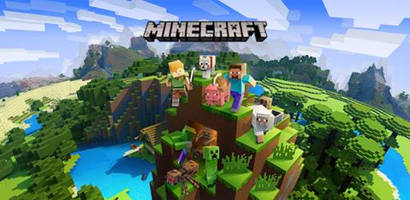
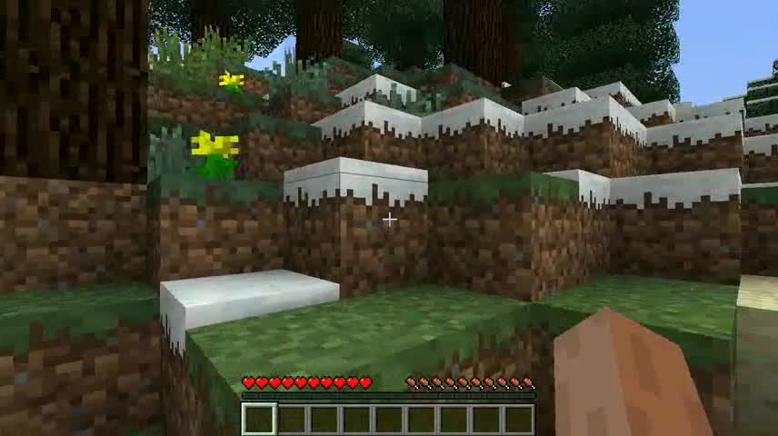
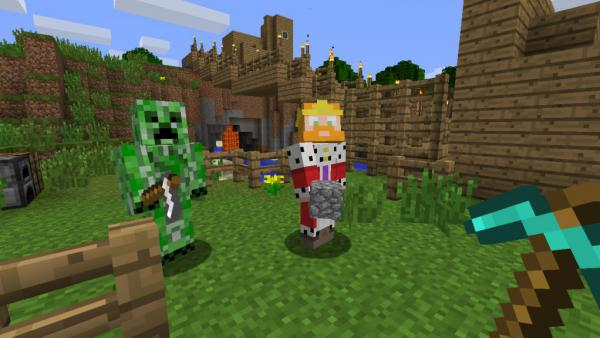
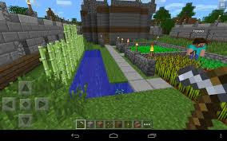

|  | Майнкрафт е видеоигра, първоначално създадена от Notch и по-късно развита от неговата компания Mojang. Написана на Java, играта позволява строене от различни по вид блокчета в триизмерен свят. Силно повлияна е от Infiniminer на Zachtronics Industries и Dwarf Fortress на Bay 12 Games. Алфа-версията на играта е пусната за първи път на 17 май 2009 г., а бета-версията – на 20 декември 2010 г. Официалните версии за iOS и Android излизат на 18 ноември 2011 г. по време MineCon 2011. На 9 май 2012 г. е пусната и версия за Xbox 360 като Xbox Live Arcade, която е разработена със съдействието на 4J Studios. До 25 май 2012 г. са продадени над 10 милиона копия на Майнкрафт за всички платформи, от които 6 милиона са за компютри. |
| Режим на оцеляване | |
|  | В режим на оцеляване играчите трябва да съберат средства, да изградят постройки, да се бият с чудовищата, да не гладуват, когато е възможно и да опознаят околността в опит да оцелеят. Играчите имат инвентар, в който те могат да събират предмети. Нещата в инвентара могат да бъдат комбинирани и от тях да се създават други, като се използват рецепти за създаването им. Целта на режима е да убиете boss-овете в играта (Ендър-дракона и Уидъра) и да съберете всички постижения. |
| Творчески режим | |
|  | Творческият режим е направен за забавление. В него притежавате всички предмети и блокове, които има в играта и може да ги използвате неограничено. Умирате само когато при копаене стигнете до основен камък и го счупите (Тогава пропадате в бездънна пропаст (падате от света).) или когато напишете в чата /kill. Могат също така да се създават същества (мобове). В творчески режим чудовищата не могат да нападат. Има много команди, които могат да се използват, като /give и др. |
| Екстремен режим | |
|  | Екстремният режим е като оцеляване, но с малко допълнение – имате само 1 живот и светът е заключен на най-трудното ниво. Умрете ли, няма бутон за прераждане. След смъртта, на играча се предоставят две възможности – да стане наблюдател или да изтрие света. |